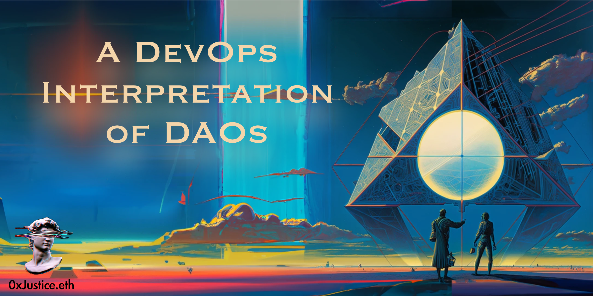
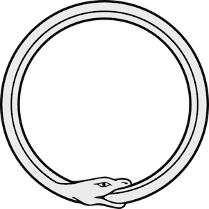
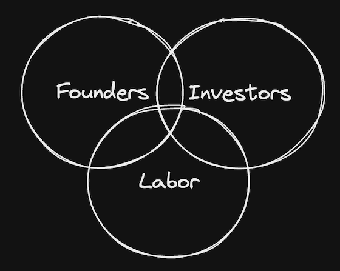
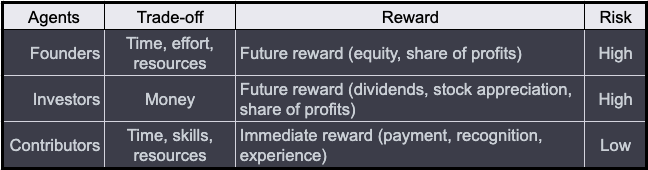
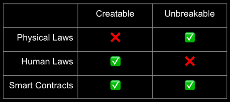
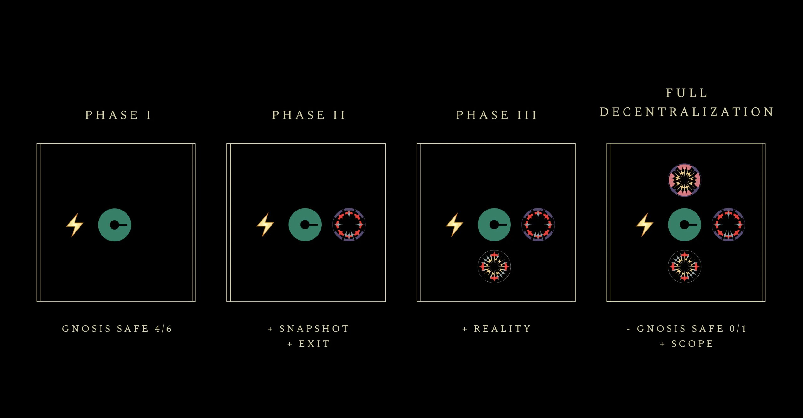
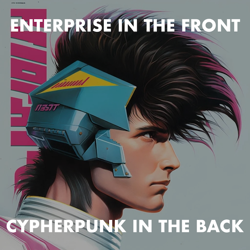
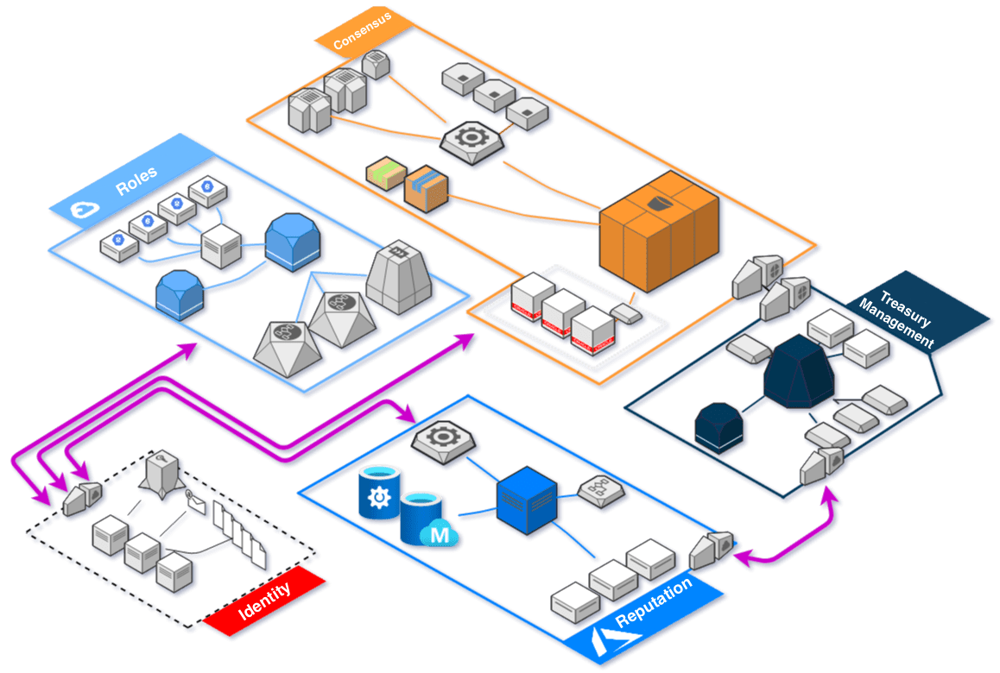

A DevOps Interpretation of DAOs
Originally published at https://paragraph.com/@0xjustice/a-devops-interpretation-of-daos

How and why DAOs came about will inevitably influence how we think we can and should use them. If they came about exclusively as a response to oppressive and extractive corporations, it's unlikely that we'll envision them as potential complements to traditional businesses.
If, on the other hand, we see them as a natural next step in a more significant technical arch of business capabilities, then we'll look for suitable places to apply them. This approach is the most helpful lens to interpret the DAO movement.
In this paper, we'll unpack how DAO technology is an extension of existing technology trends; we'll explain the technical benefits of these new capabilities and theorize how they might apply to traditional organizational types.
Historical Context
Organizations-as-Code
Since Marc Andreessen declared that "software is eating the world," we've seen more fields consumed by computer science, and existing ones have expanded their programmatic scope. This trend is most evident in the practice of software development itself.

Software is eating software
This software cannibalism started in the 90s when system admin tools that allowed configuration via a declarative language first appeared. Known as Infrastructure-as-Code (IaC), it quickly gave rise to CI/CD practices that replaced manual code deployments with automatic ones. This technology took us from releasing code every few weeks or months to thousands of times to multiple versions daily. The trend of replacing manual practices with ones defined by code continued to and through Config-as-Code (CaC), Policy-as-Code (PaC), Security-as-Code (SaC), and Documentation-as-Code (DaC).
This pattern became known as "Everything-as-code" or EaC. It treated all aspects of software development, operations, and infrastructure as code resulting in repeatable, scalable, derisked, auditable, and version-controlled systems. Consider DAOs in this context. DAOs are not an anomaly but a natural consequence of the EaC trend. DAOs are Organizations-as-Code (OaC), and all the benefits of previously automated domains are equally relevant here.
API-first Thinking
Before the iPhone, web developers created dedicated mobile versions of websites and hosted them under a "mobile" subdomain. We called these sites m-dot sites. After the iPhone and other browser-capable handsets appeared, developers started practicing mobile-first and responsive web design (RWD). This approach enabled a single website to change to accommodate whatever device was rendering it dynamically.
Eventually, this didn't work because the number of potential devices rendering a website grew. The API-first idea was born. Rather than focusing on the visual elements of a website or app that can change based on context, good design starts with defining the software's abstract interface (API). These APIs would also be accessible to other developers, and the vision of the programmable web crystallized.
DAOs are organizations reduced to their most fundamental interface. This idea also coheres with the idea of a "business model" as an abstract definition of a value-generating system without regard for implementation. When you combine this with a description of an organizational interface, we can define a mathematically pure model of how an organization functions (model) and its controls (API). DAOs are the culmination of this approach to organization design.
Technical Capabilities
DAOs may have a social and political impact, but they're, first and foremost, a technology we can use to create anything. DAOs, as nation-states, will not drive adoption. The above reframing of DAO technology as an extension of DevOps is more promising and more understandable to technologists, and it dramatically expands the solution space for use cases. With this in mind, I'll now articulate the new capabilities that flow from this framing.
Present Utility
Programmable Agents
Naive presentations on the value proposition of DAOs tend to focus on prescribed hierarchies and direct democracy. I say naive because those approaches often don't work, so we don't see them predominantly reflected in the world. Hierarchy, specialization, and separation of concerns are natural, and rejecting these categories will frustrate all stakeholders. See Efficient DAO Design and Rethinking the DAO Contributor Funnel.

Example stakeholder segmentation
The real value unlocked by DAOs is programmable stakeholder segmentation. We can define and explicitly model any number or configuration of stakeholders as agents in a system. Consider the following archetypal personas. There is little chance of creating a basic coordination mechanism without independently modeling each stakeholder's drives and resources.

Different agent properties
Programmable Property
We can replicate existing securities and joint-stock corporate governance and improve it using DAO technology. Let's take the Moloch governance system as an example. It uses a multi-share system to separate controlling interest from purely financial interest, and holders can "burn" their shares in exchange for a pro-rata claim of the treasury.
With this system, we can create share floor prices because it's always possible to burn for a proportional amount of the treasury. Traditional securities lack this property. A rumor can trigger a sell-off and crash the stock without any fundamentals of the company changing.
We can also design tokens to programmatically accrue in value relative to the performance of a protocol. Regular securities lack this property as well. There is no necessary connection between their price and the company's performance. They're "dumb" securities.
An old-time stock trading floor
These two examples demonstrate the trustless programmability made possible by building on-chain. We could add dividend-paying mechanics through on-chain splits or unlocks if the treasury reaches predefined thresholds. Anything you can imagine, you can program. The future will look back at our off-chain companies and current stock market the same way to look at old trading floors with chalkboards.
Programmable Contracts
You may have heard the statement, "Code is law," but most fail to grasp the deeper insight contained within it. The law referred to in that phrase is neither legal laws nor physical law but a third, stranger thing. Smart contracts have created an entirely new kind of law.

Code is Law
Physical laws like gravity can neither be created nor broken. Humans can make new legal laws, but they are breakable. Humans can now make new laws with smart contracts representing unbreakable agreements. This ability is monumental at a civilization scale.
On-chain organizations are built on this these unbreakable laws. Bitcoiners are apt to point to the historical impact of private property on society. Consider the effect of democratized access to unbreakable agreements.
Future Application
Computer scientist Edsger W. Dijkstra said, "The question of whether a computer can think is no more interesting than the question of whether a submarine can swim." The same holds about the question of whether DAOs are companies. What makes a company is incentive alignment and value accrual.
DAOs can accomplish this better than traditional legal structures. On-chain organizations are faster, more efficient, and more flexible than analog organizations if appropriately designed. With this alternative framing in mind, let's examine two new ways to apply this.
DAOs for Startups
The future of internet-native startups is on-chain. When DAO tooling and mental models reach maturity, creating and growing a company will be as convenient and commonplace as registering a domain. The advantages of doing so are many.
By organizing on-chain, you get the built-in advantages associated with EaC, such as static analysis, simulation, repeatability, scalability, reduced risk, auditability, dependency management, and versioning.
You future-proof your company and equip it with built-in mechanisms for growth. Managing access, ownership, and incentives as an organization grows is difficult. Being able to do so in a programmatic way is a game changer. DAO tooling makes this possible.
You can drive adoption and increase trust by distributing ownership and interest. Network effects are a zero to one factor. They are tough to acquire but massively valuable once achieved. See Chris Dixon's Crypto Tokens: A Breakthrough in Open Network Design
Lastly, you shield against capture. Capture happens when one party can gain control of an organization or system and exploit it to its benefit. This capture can happen by threats from within or without. Incredible expansion patterns are available now through things like the Zodiac pattern from Gnosis Guild to mitigate the risk of capture.

GnosisGuild Zodiac Expansion pack
DAOs for Enterprise
DAOs, when conceived as IT, DevOps, and infrastructure, are not at odds with traditional big tech; they extend them. We should create and promote "trad org" expansion packs that complement rather than contradict business goals. This pattern is, in fact, already happening. Consider the following progression:
-
Collectibles: Many Web2 companies are dipping their toes into the water of NFT collectibles. These include Starbucks, Reddit, Adidas, etc.
-
Loyalty Programs: With these collectibles, they can bootstrap loyalty programs. Salesforce just launched a dedicated platform to facilitate this need. Other top names include Uptop and Hang.
-
Private Access and Voice: All this provides a foundation for brands to manage their customers directly and an opportunity to get early and continuous customer feedback.
-
Power: The last step in this escalation pattern is direct power over resources. This power could take the form of budgets autonomously directed by stakeholders towards initiatives they feel most strongly about.
Do you see the progression? An expanding continuum of stakeholder ownership and engagement. This vision is the iTunes-ification of DAO patterns.

The DAO Mullet
Conclusion
It's not unusual for new technology to be adopted and promoted first by countercultural style thinkers. This was the ground from which Steve Jobs and Steve Wozniak sprung. With time the movement produces more commercial, academic, and repeatable solutions. Due to accelerating change, this may happen faster than it has in the past, so it would behoove DAO thinkers to get ahead of this trend. Here are two possible ways to do that.
Map the existing DevOps concepts and practices landscape to DAO features and capabilities. Consider the new possibilities that surfaced through cross-pollination and impacts on traditional IT goals. DAOs would greatly benefit from Agile, Lean, and Platform/Ecosystem Design thinking. Still, a new breed of DevOps could also be born from the ability to launch flash organizations with game theoretic incentive design.
Diagram DAO capabilities and configurations in the style of cloud architectures. This has the dual advantage of being more understandable to technologists and identifying a gap in Web3 tooling similar to how we find missing elements on the periodic table.

The ties between DevOps and DAOs are much more profound than we realize. We get business utility, historical continuity, and roadmap inspiration by understanding and highlighting these ties. This approach is what I'm focusing on at Polygon Labs. If you want to help in this mission, please complete this form and DM me on Twitter, and let’s build this vision together.
Originally published on 0xJustice.eth